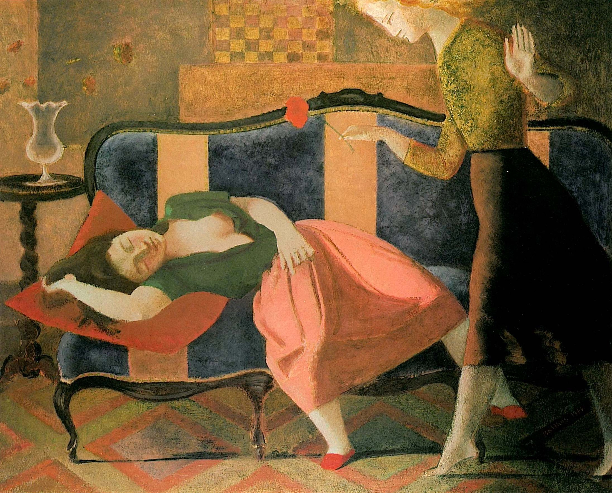

Lágrimas de Eros · Obra 101 de 121
El sueño (Le Rêve)
Balthus (1955-1956)

Una muchacha duerme en un sofá mientras otra, de pie, se inclina hacia ella con una flor, en una sala con papel pintado a cuadros. En 1961 estaba en la Galerie Henriette Gomes.
Lo que hace que destaque
Una muchacha duerme en un sofá mientras otra, de pie, se inclina hacia ella con una flor, en una sala con papel pintado a cuadros. En 1961 estaba en la Galerie Henriette Gomes.
Contexto histórico
Seguramente «Le Rêve I» (1955); de «Le Rêve II» (1956-1957, 198 × 198 cm) hay registros de subasta. No se ha confirmado cuál es ni dónde está.
Autoría y procedencia
Balthus (Balthasar Klossowski de Rola, 1908-2001), pintor moderno de origen polaco-francés, célebre por sus interiores enigmáticos, sus durmientes y sus atmósferas suspendidas.
En los libros
Las lágrimas de Eros, de Georges Bataille · Lámina de la p. 182
Ficha pendiente de contrastar con fuentes académicas.